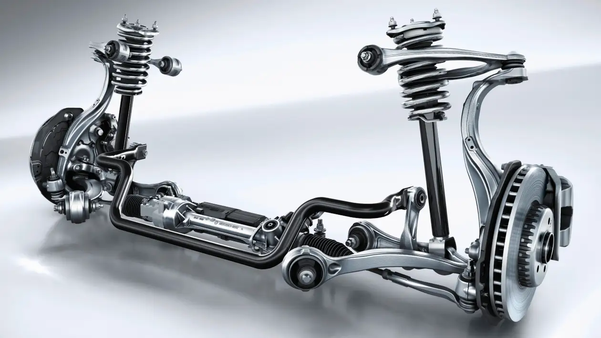
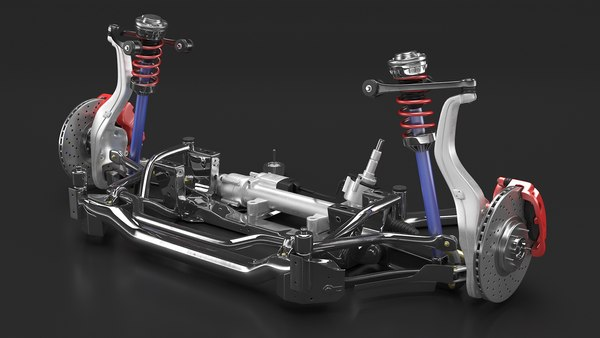

Here wll be showing what types of modification we do and some pictures are customers that we already done their dreams cars come to life
At our workshop, we take pride in offering top-quality exhaust system solutions designed to keep your vehicle running smoothly, efficiently, and quietly. Your exhaust system does more than just direct fumes away — it improves engine performance, reduces harmful emissions, and ensures a quieter, more comfortable drive. Our skilled technicians use precision tools and high-grade components to repair, replace, or upgrade your exhaust, ensuring optimal fuel efficiency and compliance with environmental standards. Whether you need a quick fix or a full system overhaul, we deliver reliable workmanship you can trust.

